1. Resumo
Em 17 de dezembro de 2023 a Prefeitura de São Paulo passou a não cobrar tarifa nos ônibus municipais aos domingos — 2024 é, portanto, o primeiro ano completo da política, e 2023 é o "antes" a menos dos seus três últimos domingos. Este estudo mede quanto da variação de demanda entre 2023 e 2024 pode ser atribuído à política, usando o dia útil como controle: se a demanda de domingo cresceu muito mais que a de dia útil, a diferença isola o efeito da gratuidade do crescimento geral do sistema.
A métrica central, usada em todo o relatório, é o Sinal Tarifa Zero = variação percentual da demanda de domingo (2024 vs. 2023) menos a mesma variação no dia útil, em pontos percentuais (p.p.).
Os três números vêm da série oficial de passageiros transportados da Prefeitura/SPTrans — a única fonte deste estudo que é publicamente auditável (ver metodologia). São médias por dia, dentro dos meses de abril, maio, setembro e outubro de cada ano, nas datas entregues pela bilhetagem, sem feriados, pontes, dias anômalos e dias em que a entrega veio truncada (ver calendário). Sem essa limpeza o número era +28,9 p.p.: um domingo de 2023 com um terço do volume normal (01/10) entrava na linha de base.
O mesmo efeito medido por duas fontes
Média de passageiros por dia em cada tipo de dia, a variação 2023→2024 e o sinal resultante, pela
série oficial e pela bilhetagem (esta sempre excluindo registros sem linha_blt).
Gerado por 03_comparacoes/compara_demanda_oferta_genero_idade.ipynb, Seção 8.
A amplitude 24,1–27,1 p.p. não é um intervalo de confiança
São duas estimativas pontuais do mesmo efeito, calculadas pelo mesmo procedimento sobre fontes diferentes: a série oficial de passageiros transportados e a bilhetagem. O intervalo é simplesmente o menor e o maior dos dois valores.
Nenhuma variância amostral é calculada: as duas são agregações censitárias — todos os embarques do período, não uma amostra — de modo que erro-padrão e intervalo de confiança não estão definidos aqui. A amplitude mede divergência entre critérios de contagem, não margem de erro estatística. As duas concordam no sinal e na ordem de grandeza; divergem na magnitude.
Regra editorial deste relatório
Níveis pela série oficial; desagregação (zona, gênero, idade) pela bilhetagem. O número de manchete é +27,1 p.p., da fonte auditável. Os recortes internos — onde o efeito acontece e sobre quem — só existem na bilhetagem, que subestima levemente o crescimento de domingo. Por isso as seções seguintes leem padrões e contrastes relativos, não níveis absolutos.
2. Onde o efeito aparece no território
Cada zona da Pesquisa Origem-Destino 2023 do município de São Paulo com demanda na bilhetagem foi classificada em um tier pela renda domiciliar per capita média dos seus moradores, em quintis: do Q1, o quinto de zonas de menor renda, ao Q5, o de maior renda. A renda vem dos microdados da amostra do Censo 2022 (ver metodologia). A análise por zona cobre só o município: são 339 das 355 zonas com demanda na bilhetagem — as 16 de municípios vizinhos (Osasco, Diadema etc.) somam 0,4% do volume e ficam de fora.
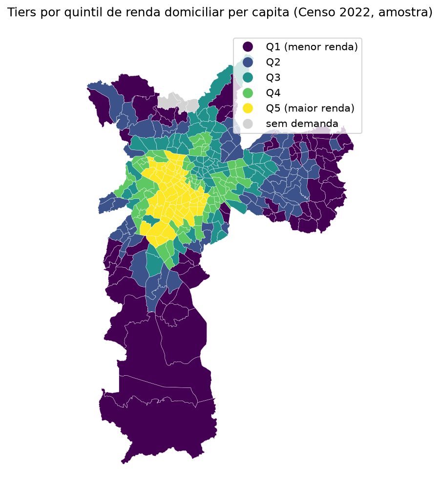
Número de zonas, faixa de renda (R$ de julho de 2022), moradores e distância média à Praça da Sé, por quintil. Os quintis têm o mesmo número de zonas, não de moradores: o Q1 reúne 4,2 milhões de pessoas, o Q5 1,0 milhão.
O sinal por zona de embarque
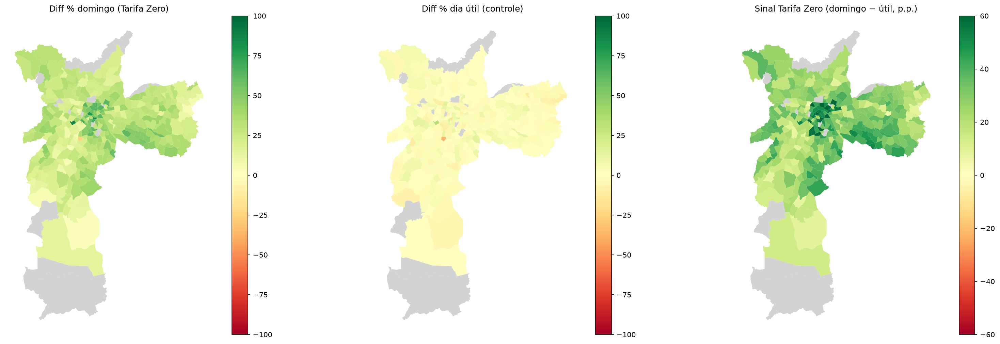
Três leituras por quintil de renda. Sinal mediano: a variação relativa, em p.p. Embarques extras por domingo: quanto o domingo de 2024 ficou acima do que seria se tivesse crescido como o dia útil da própria zona, na zona mediana e somado no quintil. Por mil moradores: a soma do quintil dividida pelos seus moradores. Também a razão domingo / dia útil de 2023, que mede quanto a zona já usava o ônibus no domingo antes da política. Todas em embarques por dia.
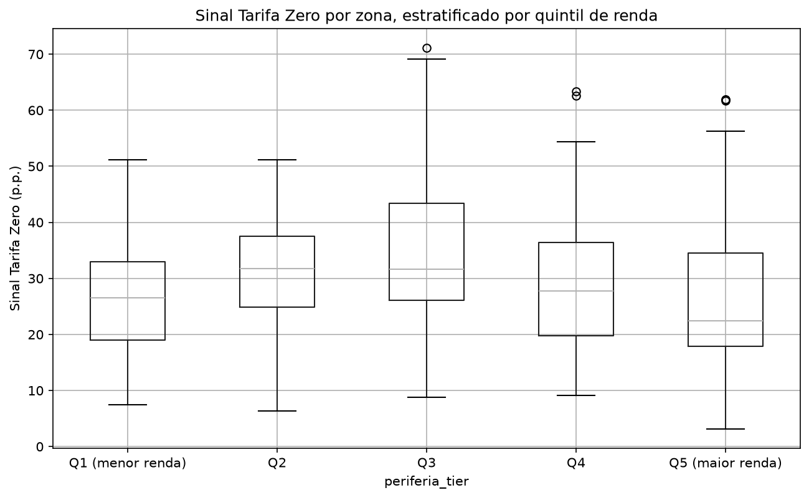
O efeito é positivo em todos os quintis, mas a ordem entre eles depende de como se mede.
- Em variação relativa, a mediana é maior nas zonas de renda intermediária (cerca de 32 p.p. no Q2 e no Q3, 28 no Q4) e menor nos extremos (27 p.p. no Q1, 22 no Q5). Parte desse U invertido é o centro: 22 das 59 zonas do aglomerado de sinal alto do centro (seção 5) estão no Q3.
- Em embarques extras por zona, o Q1 ganha mais: cerca de 1.980 embarques por domingo na zona mediana, contra 590 no Q5. As zonas mais pobres já usavam mais o ônibus no domingo (razão domingo / dia útil de 0,36 em 2023, contra 0,23 no Q5), então partem de uma base maior e crescem menos em porcentagem.
- Por morador, o Q1 ganha menos: 40 embarques extras por domingo a cada mil moradores, contra 52 a 58 nos demais quintis. O Q1 reúne 37% dos moradores da cidade em 64 zonas.
Nenhuma das três leituras é a "certa": o embarque é contado na zona onde acontece, não na zona onde o passageiro mora, e nas zonas centrais quem embarca não é quem mora. A leitura por morador é a mais próxima de "quem se beneficia", com essa ressalva.
3. Quem responde à política
Gênero e idade cobrem só quem validou cartão
Gênero e idade vêm do cadastro do cartão. Com a catraca de graça, cresceu muito a passagem sem cartão identificado no domingo: a classe "dinheiro" da bilhetagem foi de cerca de 118 mil para 409 mil registros por domingo, e a parcela de embarques com gênero caiu de 94% para 85% — no dia útil ficou em torno de 95% nos dois anos. Metade do crescimento do domingo não tem gênero nem idade.
Por isso as tabelas abaixo descrevem quem validou cartão, e o sinal delas fica bem abaixo do sinal de todos os embarques: cerca de 10–12 p.p. por gênero, contra 24 p.p. no total (linha "todos" de cada tabela). Os contrastes entre grupos são a informação útil; os níveis, não.
Parcela dos embarques com gênero e com idade no cadastro, por tipo de dia, e quanto do crescimento do domingo de
2023 para 2024 não tem gênero (médias por dia, embarques com linha). Gerado por
03_comparacoes/compara_demanda_oferta_genero_idade.ipynb, Seção 6.
Idade
Demanda e sinal por faixa etária agregada (60 anos ou mais × menos de 60), entre quem tem idade no cadastro, e a linha de todos os embarques.
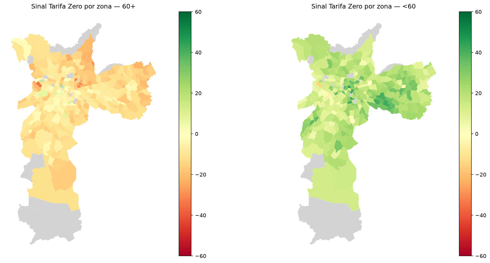
Mediana do sinal por quintil de renda, em cada grupo etário (p.p.).
Entre os menores de 60 anos o domingo cresceu 17% contra 1% no dia útil, um sinal de 16 p.p. Entre os 60+, o domingo ficou parado (−1%) e o sinal é negativo (−13 p.p.).
Esse contraste não funciona como teste de placebo. Pessoas com 60 anos ou mais já tinham gratuidade, e seria natural esperar sinal perto de zero para elas. Ele dá negativo por duas razões que não são resposta à política:
- Quem se move é o controle. O dia útil dos 60+ cresce 12% de 2023 para 2024 — o cartão de idoso sobe cerca de 17% —, contra 1% dos menores de 60. Pode ser a volta mais lenta dos idosos depois da pandemia, mas é um movimento do dia útil, sem relação com o domingo.
- A medição do domingo mudou com a própria política. Com a catraca liberada, quem tem cartão de gratuidade não precisa validar e pode passar sem registro de idade. No domingo de 2024 os embarques com cartão de idoso caem, e aparecem 60+ validando com cartão comum.
A política também muda o domingo de quem não paga: ônibus mais cheios, acompanhantes que agora viajam de graça. O contraste entre 60+ e <60 fica como descrição, não como evidência de que o efeito é só de preço.
Gênero
Demanda e sinal por gênero, entre quem tem gênero no cadastro, e a linha de todos os embarques.
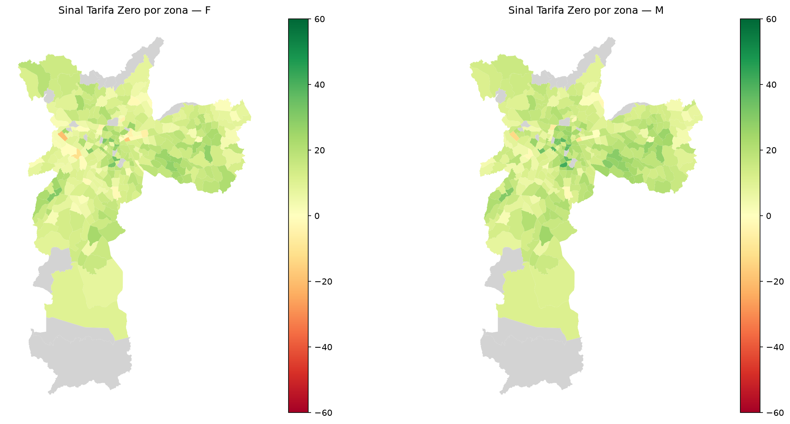
Mediana do sinal por quintil de renda, em cada gênero (p.p.).
Entre quem validou cartão, homens e mulheres respondem de forma parecida: 12 p.p. contra 10 p.p. Por quintil de renda, as duas medianas coincidem no Q1 e se afastam à medida que a renda sobe, com o sinal feminino de 2 a 6 p.p. abaixo do masculino do Q2 ao Q5 — uma diferença pequena diante da dispersão entre zonas. Como metade do crescimento não tem gênero, não dá para saber se o mesmo vale para quem passou sem cartão.
Tipo de serviço: grupos de lote
As linhas de ônibus pertencem a três grupos do edital de concessão — Estrutural, Articulação Regional e Distribuição Local — identificados pelo lote de cada linha (metodologia). Aqui o sinal é lido por tipo de serviço, em vez de por território: não depende da zona de embarque, só da linha.
Variação 2023→2024 por grupo de lote da linha, na bilhetagem (médias por dia, sem registros sem
linha_blt). Gerado por 03_comparacoes/compara_demanda_oferta_genero_idade.ipynb, Seção 3.
O mesmo recorte pela série oficial, ao lado da bilhetagem (Seção 8 do mesmo notebook).
O sinal é parecido nos grupos Estrutural e Articulação Regional (cerca de 28–29 p.p. na bilhetagem) e cerca de 10 p.p. menor na Distribuição Local (19 p.p.). A série oficial conta a mesma história, em níveis mais altos — 32, 34 e 21 p.p. —, e a bilhetagem fica de 2 a 5 p.p. abaixo dela em todos os grupos, a mesma subestimação do crescimento de domingo vista no total da cidade. A causa da diferença da Distribuição Local não foi investigada. Seis linhas grandes migraram de lote durante 2024 (0,4% do volume); tirá-las muda o sinal de cada grupo em no máximo 0,2 p.p.
4. A oferta acompanhou?
Se a demanda de domingo cresceu bem acima do controle, a pergunta seguinte é se a oferta de lugares cresceu junto. Não cresceu. Entre 2023 e 2025, aos domingos, a demanda subiu cerca de 30% e o serviço programado ficou praticamente igual — o sistema absorveu o aumento por ocupação, não por ampliação.
Esta é a parte mais sólida do relatório
Diferente do resto do estudo, este resultado não depende de nenhuma estimativa nossa:
-
Não usa
zona_emb— não há recorte territorial aqui, então a estimativa de zona da SPTrans, com todas as ressalvas da metodologia, não entra na conta. - Não usa a bilhetagem — a demanda vem da série oficial de passageiros transportados, publicada pela Prefeitura/SPTrans e verificável por terceiros.
-
Usa os 12 meses de cada ano entre 2023 e 2025, não a janela de quatro meses
do resto do relatório:
Partidas.csvcobre os três tipos de dia em todos os meses desse período e a série oficial cobre o mesmo período sem lacunas relevantes. Só a bilhetagem era limitada a abril, maio, setembro e outubro. (2026 ainda não entra aqui:Partidas.csvsó tem dados até dezembro de 2025 — a série oficial de demanda já cobre parte de 2026, mas sem oferta para comparar não há razão a calcular.)
Em compensação, ele responde a uma pergunta menor: quanto a lotação piorou, não onde. Essa segunda pergunta continua dependendo do recorte por zona.
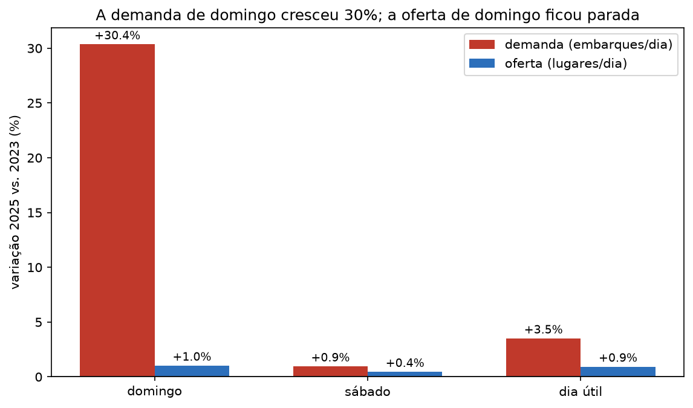
Médias por dia de cada tipo, calculadas mês a mês e depois entre os doze meses do ano — uma linha
por tipo de dia e ano, com a variação contra o ano anterior. Gerado por
02_oferta/compara_oferta_demanda_agregada.ipynb.
A razão lugares por embarque
A conta é publicada em duas unidades de propósito. Partidas por mil embarques é totalmente observada — sai da programação de viagens da SPTrans e não depende de nenhuma tabela de capacidade. Lugares por embarque é a leitura em assentos, que depende da tabela de capacidade nominal descrita abaixo. As duas dão praticamente a mesma resposta, o que significa que a conclusão não está apoiada na tabela de capacidade.
A razão oferta/demanda no domingo e no dia útil (controle), e o sinal isolado — a diferença entre as duas variações, em pontos percentuais — para cada transição de ano consecutiva. A maior parte da queda acontece na primeira transição (2023→2024, quando a política entra em vigor); entre 2024 e 2025 o sinal já não é negativo, o que é consistente com um efeito concentrado na entrada da tarifa zero, não numa deterioração contínua.
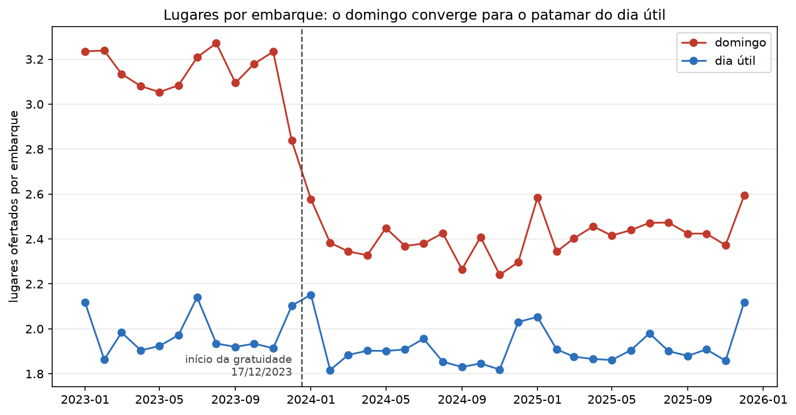
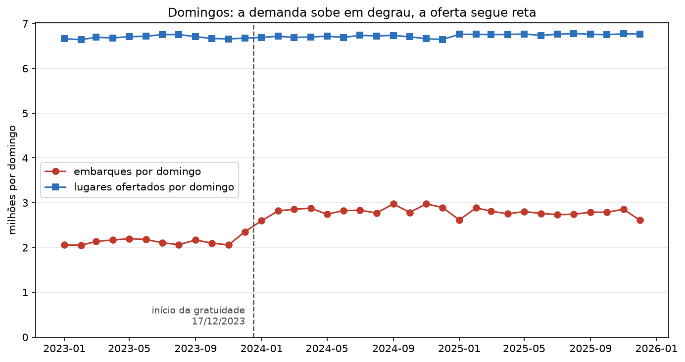
Quando a política começou: 17 de dezembro de 2023
A data não precisa ser assumida — está no dado. A série oficial separa o total por modalidade de pagamento, e aos domingos os pagantes saem de 55% do total para 0,1% entre 10 e 17 de dezembro de 2023. Isso tem duas consequências para a comparação: os domingos de 17, 24 e 31/12/2023 já são pós-política e ficam fora da linha de base, e 2024 é o primeiro ano completo de gratuidade — não o primeiro ano de gratuidade.
Domingos de outubro de 2023 a fevereiro de 2024. O colapso dos pagantes é a política, não um erro de leitura do arquivo.
Como a oferta é medida
-
Partidas.csvtraz a programação de partidas por linha, mês e tipo de dia — e cobre domingo, sábado e dia útil. Cada linha do arquivo é uma partida programada de um dia típico daquele tipo, então o número de partidas já é uma grandeza diária: não há como confundir tamanho do período com tamanho do serviço. -
Tecnologias.csvinforma a frota por linha, mês e tecnologia (Miniônibus, Micro Ônibus, Midiônibus, Básico, Padron, Articulado…). -
Cada tecnologia recebe uma capacidade nominal de uma tabela de referência
(Miniônibus 40, Micro Ônibus 30, Midiônibus 60, Midiônibus Rural 55, Básico 80, Padron 95,
Articulado 150 lugares), de onde sai a capacidade média por veículo de cada
linha em cada mês:
Σ(frota × capacidade nominal) / Σ frota. - Lugares ofertados = partidas × capacidade média por veículo. Como a frota é o conjunto físico de veículos da linha, ela não muda por ser domingo; o que muda entre tipos de dia é a frequência, e essa vem do passo 1. A capacidade dominical é portanto inferida, não suposta.
- Do lado da demanda, a média é sempre por dia: média diária dentro de cada mês, depois média entre os meses — nunca soma acumulada do período.
O que sai da conta, o que entra, e por quê
- Feriados com tarifa zero somam-se ao domingo, não são descartados. Ano Novo e Aniversário de São Paulo também têm gratuidade quando caem fora do domingo — a partir do início da política, essas datas contam como tratamento em vez de serem jogadas fora como feriado comum. Ficam de fora, porém, da própria regra de outlier abaixo: um feriado tem naturalmente menos gente circulando que um domingo comum, e isso não é defeito de dado. O Natal também é tarifa zero, mas cai na janela de fim de ano, que sai da comparação (último item).
- Feriados comuns. O tipo de dia vem do dia da semana, então um feriado de terça-feira entraria no controle como dia útil comum. São cerca de 15 datas por ano — nacionais, estaduais e municipais — excluídas por lista explícita, inclusive quando caem no fim de semana, para o critério ficar simétrico. Saem também as pontes (a sexta depois de um feriado na quinta, a segunda antes de um feriado na terça), que ficam em cerca de 75–80% do volume de um dia útil comum.
- Domingos de eleição. Com voto obrigatório, os domingos de eleição municipal de 2024 (06/10 e 27/10) tiveram cerca de 1,3 vez o volume de um domingo comum. Como 2023 e 2025 não têm eleição, mantê-los inflaria o domingo de 2024. Não mudam o 2023→2025, mas mudam as duas transições ano a ano.
- Vésperas, 02/01 e quarta-feira de cinzas e dias com volume anômalo — qualquer dia abaixo de 60% da mediana do seu próprio tipo de dia no ano. Essa regra pega três domingos de 2023 (01/10, 05/11 e 12/11) que aparecem na série oficial com cerca de um terço do volume habitual — e que coincidem com a eleição dos conselhos tutelares e os dois domingos do ENEM (hipótese não verificada: catraca liberada sem registro). Mantê-los rebaixaria a linha de base de 2023 e inflaria o crescimento medido.
- A janela de 17 a 31 de dezembro sai em todos os anos. Em 2023 esses dias já são gratuitos e não podem entrar na linha de base. Cortá-los só em 2023, como na versão anterior, deixava dezembro de 2023 só com a primeira quinzena e dezembro de 2024 e 2025 inteiros, com as compras de Natal e o recesso — por isso a janela agora sai de todos os anos.
A tabela de sensibilidade abaixo mostra o efeito de cada uma dessas escolhas. Nenhuma delas muda a conclusão.
Cada linha refaz a conta mudando uma única escolha. O sinal — o domingo perdendo lugares por embarque muito mais rápido que o dia útil — sobrevive a todas.
A ressalva que permanece
A tabela de capacidade nominal por tecnologia é uma aproximação a partir de dado público, não um valor oficial certificado. Por isso os níveis absolutos de lugares por embarque (3,12 em 2023, 2,34 em 2024, 2,42 em 2025) valem como ordem de grandeza provisória, e o número de manchete é a variação percentual, em que um erro constante de escala se cancela. As partidas por dia, essas sim, são contagem direta da programação e não têm essa ressalva — e apontam a mesma coisa.
5. O que se associa ao sinal por zona
Cada ponto abaixo é uma zona OD de São Paulo acima do corte de base mínima (322 zonas), com o Sinal Tarifa Zero no eixo vertical e uma característica da zona no horizontal: renda per capita média, % de pessoas negras (pretas e pardas, Censo 2022), partidas e lugares ofertados por domingo nas linhas que cruzam a zona (2023) e distância caminhando pela rede viária até a estação de trem ou metrô mais próxima. A reta é a regressão de mínimos quadrados simples, com faixa de confiança de 95% (erro-padrão robusto HC3); renda, partidas e lugares entram em log2, de modo que a inclinação é "p.p. de sinal por dobra da variável" (metodologia).
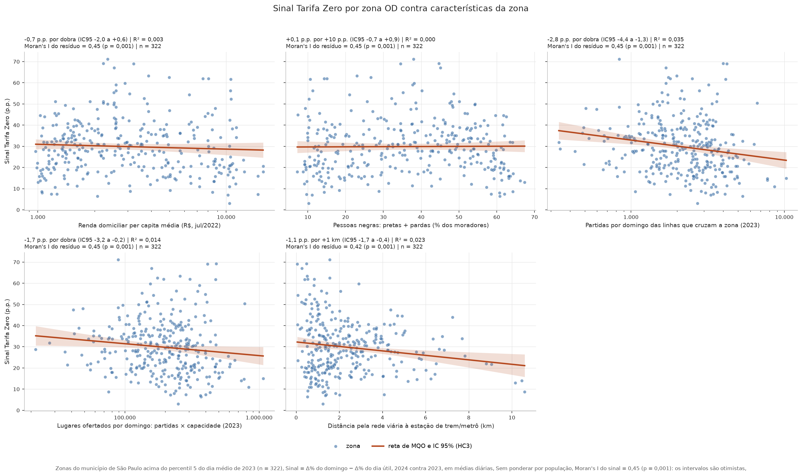
Regressão simples do sinal sobre cada variável, uma de cada vez (n = 322 zonas). Gerado por
04_correlatos/correlatos_sinal_zona.ipynb.
Só a oferta e a distância ao trilho têm intervalo que exclui o zero, e todas explicam pouco. Cada dobra das partidas de domingo se associa a um sinal 2,8 p.p. menor (IC 95% −4,4 a −1,3); cada dobra dos lugares, 1,7 p.p. menor; cada quilômetro a mais até a estação, 1,1 p.p. menor. Renda (−0,7 p.p. por dobra, intervalo que inclui zero) e % de pessoas negras (+0,1 p.p. por +10 p.p.) não se distinguem de zero. O R² não passa de 3,5%: o sinal varia muito mais entre zonas do que qualquer uma dessas variáveis explica. Esse quadro muda quando o modelo trata a dependência espacial e controla pelo tamanho da base de domingo: na regressão espacial, a oferta e a distância deixam de se distinguir de zero.
Os intervalos são otimistas: as zonas vizinhas se parecem
O Moran's I do sinal, tomando como vizinhas as zonas a até 1 km uma da outra, é 0,45 (p = 0,001), e o do resíduo de cada regressão fica entre 0,42 e 0,45: as variáveis explicam quase nada da estrutura espacial. Os intervalos acima supõem zonas independentes e, por isso, são mais estreitos do que deveriam. Inferência de verdade pede um modelo espacial, ajustado na regressão espacial abaixo; estes números são descritivos.
São associações entre zonas, não efeitos. Renda e % de pessoas negras são quase a mesma variável nestas zonas (correlação de −0,91), e a oferta de uma zona cresce com o seu tamanho — uma partida conta em todas as zonas que a linha atravessa.
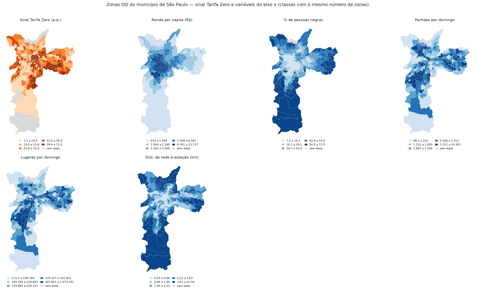
Onde o sinal se aglomera
O Moran's I global diz que zonas vizinhas se parecem, mas não onde. O Moran local (LISA) dá um valor para cada zona e a classifica pelo par (sinal da zona, média do sinal das vizinhas), com "alto" e "baixo" medidos contra a média das zonas (29,9 p.p.), não contra zero: o sinal é positivo em todas as 322 zonas, então "baixo" quer dizer que o domingo cresceu menos em relação ao dia útil, não que caiu.
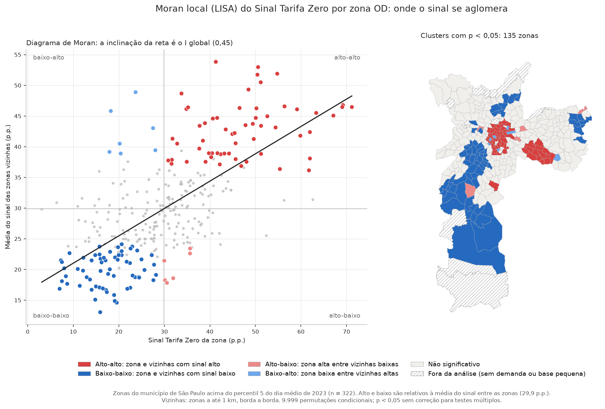
Das 322 zonas, 135 saem significativas, e formam poucos blocos grandes e contíguos. 59 são alto-alto (sinal médio de 47,1 p.p.): um bloco de 45 zonas no centro (Sé, República, Brás, Pari, Liberdade, Bela Vista, Bom Retiro) e outro de 13 na zona leste, em torno de São Mateus e Sapopemba. 63 são baixo-baixo (17,6 p.p.): um bloco de 47 zonas do sudoeste ao sul (Pinheiros, Butantã, Morumbi, Santo Amaro, até Jardim Ângela, Grajaú e Parelheiros) e blocos menores em Tucuruvi e Mandaqui e no Itaim Paulista. Outras 13 zonas destoam das vizinhas (7 baixo-alto, 6 alto-baixo), quase todas dentro ou na borda desses blocos.
Como ler o mapa
O corte é p < 0,05 sem correção para testes múltiplos: são 322 testes, e cerca de 16 zonas podem estar marcadas por acaso. Vale ler os blocos, não as zonas isoladas. Em 15 das 135 zonas o próprio sinal está a menos de 3,2 p.p. da média, e o rótulo vem das vizinhas.
O agrupamento é descritivo. As cinco variáveis acima explicam pouco dele (o Moran's I do resíduo continua em 0,42–0,45), e a base de domingo de 2023 muda de um bloco para o outro: mediana de 2.330 embarques por domingo nos blocos altos, 7.052 nos baixos e 4.911 nas zonas sem aglomerado. Como zona de base grande cresce menos em porcentagem (ver a regressão abaixo), parte do mapa é efeito da base — o mapa seguinte separa essa parte.
O que sobra do aglomerado depois da base
O mesmo Moran local, agora sobre o resíduo de uma regressão da variação % do domingo contra a variação % do dia útil e a base de domingo de 2023: o que fica alto ou baixo depois de descontar o tamanho da zona e a tendência do seu dia útil.
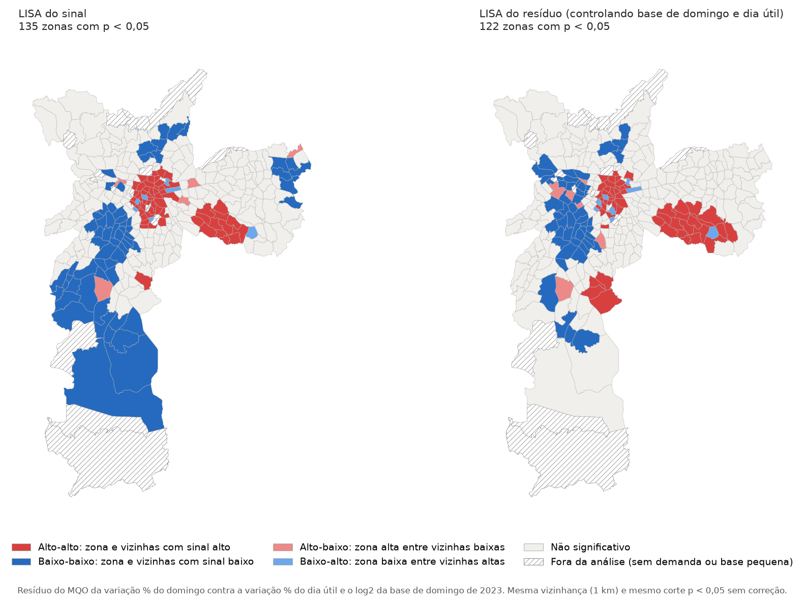
O centro continua: 45 das 59 zonas alto-alto seguem alto-alto no resíduo, ou seja, o crescimento do domingo no centro vai além do que o tamanho das zonas explica. O bloco rico do sudoeste (Pinheiros, Morumbi, Vila Olímpia, Brooklin) também continua baixo-baixo. Já a periferia muda: 26 das 63 zonas baixo-baixo deixam de ser, entre elas quase todo o extremo sul (Grajaú, Parelheiros, Jardim Ângela, Capão Redondo, Cocaia) e o extremo leste (Itaim Paulista, Vila Curuçá, Jardim Robru). Ali o sinal baixo é o de zonas que já tinham muito embarque no domingo antes da política: elas cresceram menos em porcentagem, mas não ficaram para trás em número de passageiros.
Regressão espacial: o que sobrevive à dependência entre zonas
As regressões simples acima deixaram o Moran's I do resíduo em 0,42–0,45. Para tratar essa dependência, a análise seguinte usa um único modelo, em que o desfecho é a variação % do embarque médio de domingo, 2023 → 2024 (e não mais o sinal). O crescimento do dia útil entra como controle, com peso estimado em vez de ser subtraído com peso 1, e a base de domingo de 2023 também entra: ela está no denominador da variação, então uma zona de base pequena pode ter variação grande só por isso, e sem esse controle o tamanho da zona se mistura com qualquer variável que ande junto com ele, como a oferta. Base e renda entram em log2 (coeficiente por dobra); as partidas, em milhares.
Efeitos em p.p. da variação % do domingo, 322 zonas, vizinhas a até 1 km. No modelo de defasagem (a leitura principal), o efeito
aparece em três partes: direto (na própria zona, contando o retorno pelas vizinhas), indireto
(nas outras zonas) e total; o p é o do coeficiente. Ao lado, o modelo de erro espacial e o MQO. Gerado por
04_correlatos/regressao_espacial_sinal.ipynb.
Por que o modelo de defasagem. Os testes do multiplicador de Lagrange apontam a defasagem espacial (robusto de defasagem 38,2, contra 4,5 do de erro), e o AIC concorda: 2.352 na defasagem, 2.358 no erro, 2.356 no Durbin espacial (que inclui os dois e não melhora) e 2.458 no MQO. Há também um mecanismo para a defasagem: a viagem de volta. Quem passa a embarcar no domingo numa zona volta embarcando em outra, em geral próxima, e o crescimento de uma zona aparece nas vizinhas. No modelo, isso vira um multiplicador: com ρ = 0,64, o efeito total é cerca de 2,8 vezes o coeficiente. O efeito direto é o número comparável ao do MQO e do modelo de erro; o total responde a "se todas as zonas mudassem juntas", que para a renda tem pouca leitura prática.
Dois resultados se sustentam nos modelos espaciais. Cada dobra da base de domingo de 2023 se associa a uma variação do domingo 3,8 p.p. menor na própria zona (efeito direto; 9,9 p.p. no total), e cada dobra da renda per capita, 3,3 p.p. menor (8,5 no total), os dois com p < 0,001. No modelo de erro os números são parecidos com o efeito direto: −3,2 para a base e −4,6 para a renda. O peso estimado do dia útil fica entre 1,06 e 1,10: subtrair o dia útil com peso 1, como faz o sinal, é uma boa aproximação. A oferta e a distância à estação não se distinguem de zero. Quando a base de domingo e a dependência espacial entram no modelo, as partidas deixam de se associar a um crescimento menor, e a distância cai de −1,2 p.p. por km no MQO (p = 0,004) para −0,3 (p = 0,47) na defasagem. O resíduo filtrado dos modelos espaciais tem Moran's I perto de zero.
Os testes de robustez
- Vizinhança. Com contiguidade, 2 km, 6 ou 10 vizinhas mais próximas, o coeficiente da renda fica entre −2,9 e −3,9 na defasagem (−4,0 a −6,0 no modelo de erro) e o da base entre −3,6 e −4,1. Uma vizinhança pela rede de ônibus (as zonas com as linhas mais parecidas) ajusta pior que todas as geográficas: a dependência é de proximidade, não de linhas compartilhadas.
- Heterocedasticidade. Estimados por GMM, com erro-padrão robusto, os dois modelos dão os mesmos coeficientes e as mesmas conclusões.
- Regressão à média. Se o efeito da base fosse ruído (um domingo de 2023 medido baixo por acaso cresce muito depois), medir a base com metade dos domingos de 2023 e a variação com a outra metade o faria encolher. Não encolhe: −3,5 nas duas combinações, contra −3,6. Medir a base pelo sábado ou pelo dia útil dá o mesmo.
- Folga de oferta. Com lugares ofertados por embarque no domingo de 2023 no modelo, o efeito da base some (−0,5, p = 0,70), a folga entra com +3,1 p.p. por dobra (p = 0,01) e o ajuste melhora (AIC 2.348). Ou seja: as zonas grandes cresceram menos onde os ônibus já andavam mais cheios. Os dados não separam "base grande" de "pouca folga", porque as duas andam juntas, mas a leitura de teto de capacidade é tão compatível com eles quanto a de base grande.
Coeficientes que variam no território (MGWR)
O GWR deixa o coeficiente variar de zona para zona, estimado com as vizinhas mais próximas. O MGWR vai além: escolhe uma escala espacial para cada variável. Uma variável com efeito parecido na cidade toda ganha uma escala quase global; uma cuja associação muda de região, uma escala local.
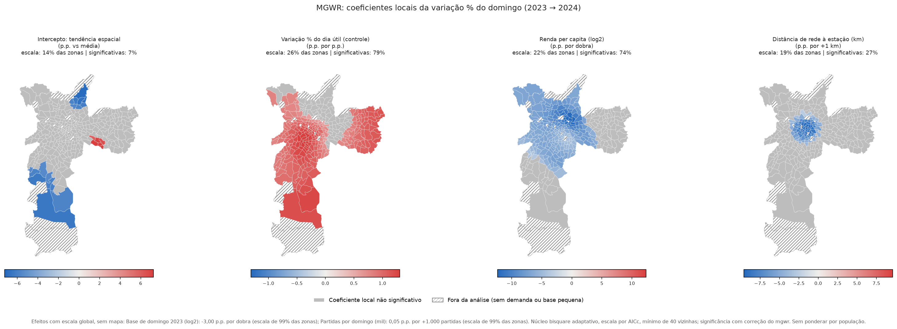
Escala espacial de cada termo no MGWR, em vizinhas e em % das zonas. Perto de 100% quer dizer efeito global.
Ajuste de cada modelo sobre o desfecho padronizado (AICc menor é melhor). O GWR só com intercepto local é uma superfície de tendência espacial sem nenhuma variável explicativa.
A renda é o que varia no território. O coeficiente local é negativo e significativo em 74% das zonas, com mediana de −6,5 p.p. por dobra, mais forte no centro e no centro-oeste e sem significância no leste e no extremo sul. A distância à estação só pesa no centro (significativa em 27% das zonas, com mediana de −7,5 p.p. por km entre elas) e é próxima de zero fora dele — mas no centro as distâncias variam pouco, então esse coeficiente local é instável. A base de domingo, com −3,0 p.p. por dobra, tem escala global; o peso do dia útil, com mediana 0,94, varia numa escala regional (26% das zonas), e as partidas não têm efeito local significativo em nenhuma zona. O MGWR ajusta bem (AICc 619, contra 743 do MQO na mesma escala), e as variáveis contam: a superfície de tendência sozinha fica em 762, pior que o MQO com as variáveis.
Como ler esta seção
São associações entre zonas, não efeitos, e em variação relativa. Nas zonas de maior base de domingo o aumento em passageiros foi maior, mesmo com variação % menor (mediana de +535, +1.354 e +3.067 embarques por domingo nos terços de base menor, médio e maior, contra variações de 34,7%, 30,8% e 24,6%). O efeito da base não é ruído de medida (teste das metades, acima), e pode refletir um teto de capacidade: o modelo não distingue base grande de pouca folga de lugares.
O MGWR é exploratório: os coeficientes locais não são independentes entre si, então vale ler regiões, não zonas isoladas. A significância local usa a correção para testes múltiplos do pacote, e a escala mínima é de 40 vizinhas. A inferência vem dos modelos espaciais globais.
6. Ressalvas
Oito limitações valem para qualquer leitura deste relatório. A versão detalhada está na página de metodologia.
- A capacidade nominal por tecnologia é aproximação de dado público, não valor oficial certificado — só diferenças ano a ano são publicáveis.
- A composição de frota é conhecida apenas para dia útil. A capacidade de domingo é inferida da frequência dominical aplicada ao conjunto de veículos da linha; o resíduo está em linhas de frota mista — que são 83% do volume de demanda, não um caso raro — e é quantificado na metodologia.
- A zona de embarque é uma estimativa da própria SPTrans (derivada de GPS, endereço cadastrado e horário da validação). A leitura por zona parte da premissa de que essa atribuição está correta.
- A bilhetagem subestima o crescimento de domingo em relação à série oficial: a razão entre as duas escorrega de cerca de 1,05 para cerca de 1,00 entre os anos, e o sinal da bilhetagem fica cerca de 3 p.p. abaixo do oficial (24,1 contra 27,1).
- Gênero e idade só existem para quem validou cartão, e no domingo de 2024 metade do crescimento passou sem cartão identificado. Os recortes por gênero e idade descrevem esse subconjunto, e a falta muda com o próprio tratamento.
- A zona é a de embarque, não a de moradia. Renda e % de pessoas negras descrevem quem mora na zona; nas zonas centrais, quem embarca é, em boa parte, quem vem de fora.
- Cortes simultâneos de zona × gênero × idade × tipo de dia ficam esparsos — daí a supressão de zonas com base pequena nos mapas e a prioridade aos agregados por quintil de renda.
- Os registros sem linha de ônibus não entram em nenhuma contagem — cerca de 27% dos toques. A leitura mais consistente é que são validações de Bilhete Único no Metrô e na CPTM (inferência: quase todo esse volume está em zonas com estação e, no domingo, não reagiu à Tarifa Zero), mas a SPTrans não confirmou o significado do campo.